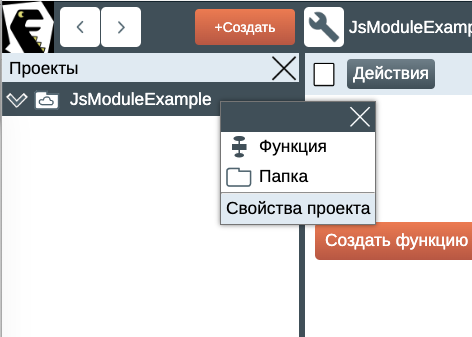
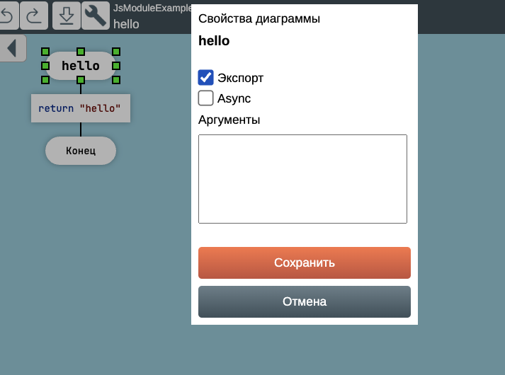
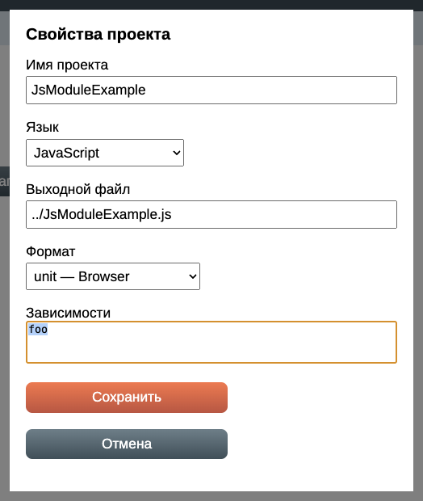

Генерация кода на языке JavaScript
На языке JavaScript легко и приятно программировать, но при одном условии. Это условие таково: применяй хорошие возможности языка и избегай плохих.
При генерации кода на языке JavaScript ДраконТех старается избегать плохих возможностей. Например, он не использует ключевые слова new, class, this.
Вместо этого генератор кода производит обычные функции, которые, наверное, одобрил бы Дуглас Крокфорд.
ДраконТех поддерживает классы и объектно-ориентированное программирование, но без ключевого слова class.
Функция module
В функцию с особым именем module помещают любой код, который будет вставлен в начало выходного JavaScript-файла.
Пример — константы и глобальные переменные, выражения require а также инициализация модуля.

Пример специальной функции module
В данном примере явно объявляется переменная nextId и неявно объявляется переменная secretValue.
Автоматическое объявление переменных
Во всех JavaScript-функциях, кроме особой функции module, запрещены объявления переменных. Иными словами, нельзя применять ключевые слова var, const и let.
Генератор кода объявляет переменные автоматически, в стиле Питона. Если вам нужна переменная, просто присвойте ей значение. Генератор автоматически создаст объявление переменной в теле функции при помощи ключевого слова var.
В функции module объявлять переменные разрешено.
Если нужно объявить константу, поместите её в функцию module.
Автоматическое объявление переменных действует во всех типах модулей.

Автоматическое объявление переменных
Для диаграммы выше ДраконТех сгенерирует функцию, в которой автоматически объявит локальную переменную result.
function add(left, right) { var result; result = addCore(left, right); return result; }
ДраконТех создаёт локальные переменные не только в теле функций, но и внутри замыканий.
Форматы модулей
ДраконТех поддерживает три формата модулей на языке JavaScript:
- CommonJS
- IIFE
- unit
Формат модуля задаётся при создании проекта.
Для имеющегося проекта формат можно изменить в свойствах проекта. Для этого нужно щёлкнуть правой кнопкой мыши на корневой папке в дереве проекта слева и выбрать «Свойства проекта».

Свойства проекта
Главное отличие между типами модулей заключается в том, как экспортируются функции.
Чтобы экспортировать функцию, откройте соответствующую диаграмму, щёлкните по заголовку правой кнопкой мыши и выберите «Свойства» в контекстном меню. Далее нужно поставить галочку в чекбоксе «Экспорт».

Экспорт функции
CommonJS
CommonJS — это формат, который изначально создавался для NodeJs, но может применяться и в браузере. Чтобы использовать CommonJS-модули в браузере, необходимо подвергнуть их обработке инструментами типа browserify. Модули IIFE и unit готовы к загрузке в браузер без доработки.
Сгенерированный в формате CommonJS модуль выглядит так:
privateMethod(); function hello() { return 'hello'; } function privateMethod() { console.log('meou'); } module.exports = { hello };
Здесь функция hello() экспортируется через module.exports.
Функция privateMethod() вызывается в функции module() и поэтому её вызов расположен в начале файла.
Для того чтобы импортировать модули, нужно в тело функции module добавить икону «Действие». В эту икону вставьте нужные выражения require().
IIFE
IIFE (Immediately Invoked Function Expression) — это идиома, которая позволяет выполнить код в браузере и при этом не засорить глобальный объект window нежелательными переменными.
Модуль, сгенерированный в формате IIFE, выглядит так. Это анонимная функция, которая вызывается сразу после объявления.
(function() { privateMethod(); function hello() { return 'hello'; } function privateMethod() { console.log('meou'); } window.hello = hello; })();
Функция privateMethod() так же вызывается в начале файла.
Здесь функция hello() экспортирована путём записи в объект window.
unit
Модуль типа unit создаёт одну большую функцию, в которую заключён весь модуль. Эта функция находится в глобальном объекте и доступна везде.
Функция создаёт и возвращает объект, который содержит экспортируемые функции.
function JsModuleExample() { var unit = {}; privateMethod(); function hello() { return 'hello'; } function privateMethod() { console.log('meou'); } unit.hello = hello; return unit; } if (typeof module !== "undefined" && module.exports) { module.exports = { JsModuleExample }; }
Для модуля в формате unit можно задать зависимости. Зависимость — это переменная внутри модуля, доступная во всех функциях модуля. Это может быть значение конфигурации или ссылка на какой-либо объект, например другой модуль. Чтобы поместить значение в такую переменную, нужно записать значение в свойство модуля с таким же именем. ДраконТех сгенерирует сеттер, который запишет в переменную значение, передаваемое в свойство.

Добавление зависимости в модуль
Здесь в модуль была добавлена зависимость foo.
Пример: удовлетворение зависимостей (в коде инициализации приложения).
var foo = FooModule(); var example = JsModuleExample(); example.foo = foo;
Пример: использование зависимостей (внутри модуля JsModuleExample).
foo.greetings();
Зависимости могут быть циклическими, поскольку зависимости задаются через позднее присваивание.
Формат unit имеет несколько преимуществ:
- Он работает как в CommonJS, так и в браузере без дополнительных доработок.
- unit позволяет создавать несколько экземпляров модуля и иметь над ними полный контроль.
- Зависимостями модулей можно управлять во время запуска программы. Это гораздо удобнее, чем жёсткая схема require() или import.